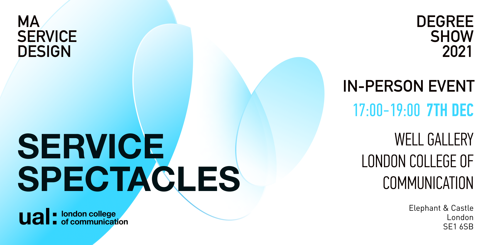
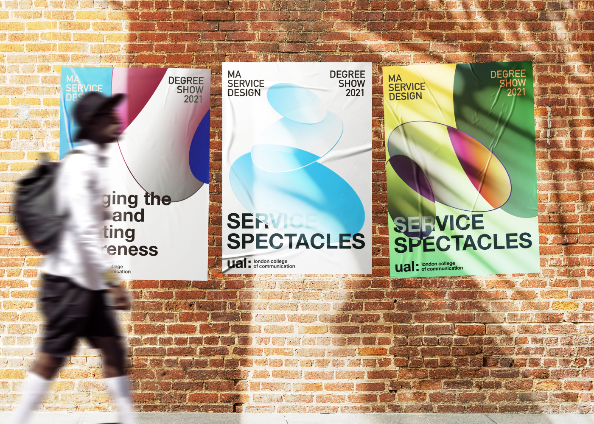

Visual Design
Service Spectacles - MA Service Design Graduation Show 2021
A visual identity and communication system for the MA Service Design Graduation Show 2021.

My Role Design Leader
Team Designer
- participate in the conception of themes and concepts
- organising co-design workshops
- creating the main visual
- creating dynamic posters
32 Service Design graduates look at a world in flux, through service-design-tinted glasses, to identify emerging challenges and opportunities. This culminates in Service Spectacles – The Service Design Graduate Showcase that sees the world in a new light, through three different yet interconnected lenses:
Micro – The importance of personal and interpersonal care Meso – Actions by and for the community Macro – Bridging the gaps and creating awareness.

The overall vision aims to encapsulate the theme of the event and the trends and focus of this year's student programme through the visualisation of Service Spectacles, a service design concept. Depending on the means of communication, different layouts as well as dynamics have been designed for the physical exhibition and the social media campaign, through a multimedia approach.
